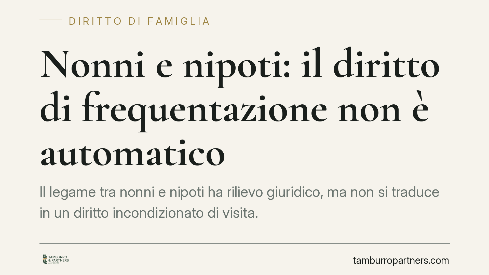

Nonni e nipoti: il diritto di frequentazione non è automatico
Il legame tra nonni e nipoti ha rilievo giuridico, ma non si traduce in un diritto incondizionato di visita. La giurisprudenza è costante: il parametro decisivo è l'interesse del minore, non l'aspettativa affettiva dell'adulto. Chi invoca la frequentazione deve dimostrare che essa giova concretamente al bambino. Vediamo come funziona e cosa serve per far valere questo rapporto.

Il legame affettivo non equivale a un diritto incondizionato
Nell'immaginario comune il rapporto tra nonni e nipoti è un dato acquisito: un legame naturale che non avrebbe bisogno di autorizzazioni. Sul piano giuridico la questione è più sfumata.
L'ordinamento riconosce e tutela il rapporto con gli ascendenti, ma non lo configura come un diritto soggettivo che prevale in ogni caso. La frequentazione è protetta nella misura in cui risponde al bene del minore. È una distinzione che pesa, soprattutto nei contesti familiari segnati da rotture, separazioni o conflitti.
Il fondamento normativo
La norma di riferimento è l'art. 317-bis del codice civile, che riconosce agli ascendenti il diritto di mantenere rapporti significativi con i nipoti minorenni. In caso di ostacolo a tale rapporto, l'ascendente può rivolgersi al giudice, che adotta i provvedimenti più idonei nell'esclusivo interesse del minore.
Il testo è esplicito: il diritto degli ascendenti non è autonomo e assoluto, ma funzionale al benessere del bambino. Il giudice non deve bilanciare due diritti equivalenti — quello del nonno e quello del minore — ma verificare se la frequentazione porti un beneficio concreto al minore stesso.
Su questa linea si colloca la giurisprudenza della Corte di Cassazione, che richiede un progetto relazionale effettivo e non la mera rivendicazione di un ruolo familiare. Non basta affermare di essere nonni: occorre mostrare che la presenza nella vita del bambino sia stabile, serena e costruttiva.
L'ascolto del minore e la soglia dei dodici anni
Un aspetto spesso frainteso riguarda il peso della volontà del bambino. La soglia dei dodici anni non nasce da una singola pronuncia, ma dalla disciplina generale sull'ascolto del minore, contenuta negli artt. 315-bis e 336-bis c.c.
Queste norme prevedono che il minore che ha compiuto dodici anni — e anche di età inferiore, se capace di discernimento — sia ascoltato nei procedimenti che lo riguardano. Il suo parere non è vincolante in senso assoluto, ma il giudice deve tenerne conto. Imporre una frequentazione a un adolescente che la rifiuta, senza valutarne le ragioni, sarebbe incoerente con la finalità stessa della tutela.
Il clima familiare come fattore di valutazione
Un elemento ricorrente nelle decisioni è il contesto relazionale complessivo. Quando il rapporto tra nonni e genitori è segnato da forte conflittualità, il giudice valuta il rischio che la frequentazione esponga il minore a tensioni, pressioni o strumentalizzazioni.
Non si tratta di punire il nonno per il conflitto in sé, ma di evitare che il bambino diventi terreno di scontro tra adulti. Un clima ostile può giustificare modalità di visita graduali, protette o, nei casi più delicati, una loro limitazione. La logica resta sempre la stessa: proteggere il minore, non sanzionare l'adulto.
Cosa cambia per i nonni
Chi desidera far valere il rapporto con i nipoti deve prepararsi a un giudizio che non è automatico. Non è sufficiente il vincolo di parentela: occorre dimostrare la concretezza e la qualità del legame, nonché la sua utilità per il minore.
Sul fronte opposto, i genitori che si oppongono alla frequentazione non hanno un potere di veto incondizionato: anche il loro rifiuto deve essere valutato alla luce dell'interesse del figlio.
Cosa fare in concreto
- Documentate il rapporto esistente: raccogliete elementi che attestino una frequentazione reale e continuativa (occasioni, comunicazioni, momenti condivisi).
- Proponete un progetto relazionale concreto: indicate tempi, modalità e luoghi delle visite, in forma sostenibile per il minore.
- Valutate con realismo la volontà del minore, soprattutto se vicino o superiore ai dodici anni: un'imposizione forzata è controproducente.
- Prima del ricorso, tentate la via conciliativa con i genitori; la mediazione familiare può evitare un contenzioso dannoso per il bambino.
- Se il dialogo è impossibile, rivolgetevi a un legale per inquadrare correttamente la domanda ex art. 317-bis c.c. e impostare la prova.
L'interesse del minore come criterio ordinatore
Il filo conduttore è uno solo: l'interesse del minore. Non è una formula di stile, ma il criterio che orienta ogni decisione. Il rapporto con i nonni merita tutela proprio perché, di regola, arricchisce la crescita del bambino. Ma quando quella frequentazione diventa fonte di disagio o conflitto, è il bene del minore a prevalere su ogni rivendicazione adulta.
Ogni famiglia ha il suo equilibrio.
Separazione, divorzio, affidamento, assegno: se vuoi un confronto riservato su una specifica situazione, scrivi allo studio. Ti rispondiamo entro un giorno lavorativo.